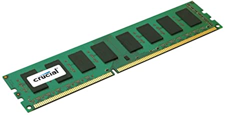
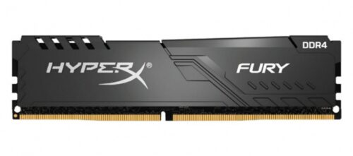
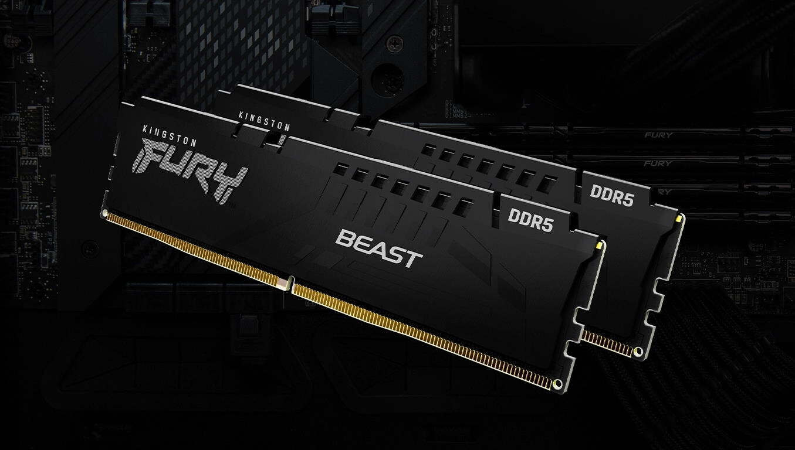

La llegada al mercado de esta tecnología coincidió con el boom de los teléfonos inteligentes, las tablets y las mini PC, por lo que se produjeron DDR3 en distintas presentaciones para ser usadas en este tipo de dispositivos. Tasa de datos de hasta 2133 MB/s, y tasa de transferencia máxima de 17 GB/s.
Capacidad: 8GB
ComprarEstas memorias presentan mejores prestaciones de rendimiento y consumo energético que las DDR3. En este sentido, en su presentación DIMM emplean 288 pines y operan con apenas 1,35 V. En cuanto a su potencia, pueden trabajar con una frecuencia de hasta 4600 MHz. Tasa de datos de hasta 6,4 GB/s, y tasa de transferencia máxima de 51,2 GB/s.
Capacidad: 16GB
ComprarLas normas especifican que la memoria RAM funcionará con un voltaje de 1,1V y tendrá una capacidad total de 6,4 GB/s. Un cambio en la arquitectura del canal de memoria en esta nueva norma implementa dos canales de datos de 40 bits por cada memoria RAM. Tasa de datos de hasta 3,2 GB/s, y tasa de transferencia máxima de 25,6 GB/s.
Capacidad: 32GB
Comprar